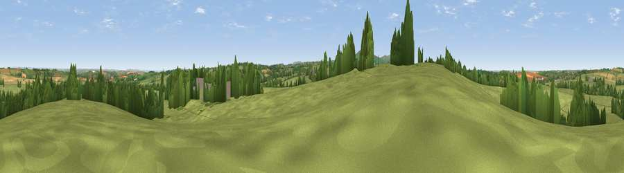

Viewpoint near North Tawton
#18129 in England · top 28% of its area beats it · near North TawtonWhere it is
The exact computed spot (SX 67875 99125). Click the marker for map links.
The view, rendered

A 360° render of this exact spot computed from the terrain model, tree cover and land cover — summer colours, afternoon light, calibrated against photographs of famous viewpoints. Real trees, hedges and buildings will differ in detail.
The panorama
Grey silhouette: terrain skyline in each direction (720 bearings, Earth curvature and refraction included). Dashed green: skyline with trees (+15 m) and buildings (+8 m) as obstacles. Blue strip: how far the ground is visible on each bearing.
Where the view opens
Wedge length = distance to the farthest visible ground on that bearing (vegetation-aware). Rings at 10, 25 and 50 km.
What fills the view
80% grassland · 12% woodland · 8% cropland
Angular shares of the visible panorama (visual magnitude), not map area. Landscape diversity 0.29 (0–1 Shannon).
Key numbers
More beautiful places nearby
The staircase of upgrades: each row has a higher view potential than everything closer. Driving times are estimates from straight-line distance, calibrated against real road routing — check an actual route before setting out.
| Place | Direction | Drive | Score |
|---|---|---|---|
| Viewpoint near North Tawton | WSW · 1 km | ~3 min | 54.3 |
| Viewpoint near Spreyton | SSW · 2 km | ~5 min | 55.9 |
| Viewpoint near North Tawton | N · 3 km | ~8 min | 59.6 |
| Viewpoint near South Tawton | WSW · 4 km | ~10 min | 59.9 |
| Viewpoint near Sticklepath | WSW · 6 km | ~13 min | 63.8 |
| Viewpoint near Whiddon Down | S · 6 km | ~13 min | 67.0 |
| Viewpoint near Whiddon Down | S · 6 km | ~13 min | 67.5 |
| Viewpoint near Sticklepath | SW · 7 km | ~15 min | 73.5 |
50.77661, -3.87533 · source: screening · position refined by local search. Computed location — check access rights before visiting.